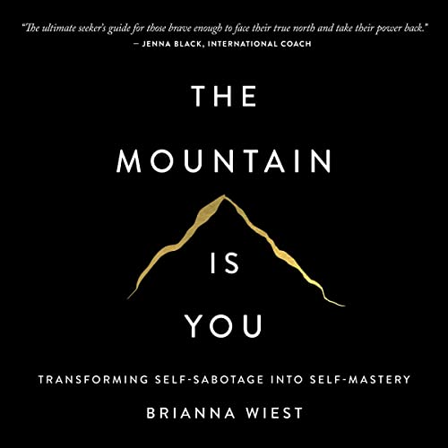

Library › Self-Improvement
The Mountain Is You — Summary & Key Lessons

Transforming self-sabotage into self-mastery — the mountain you must climb was built by you, which means you can move it.
📖 OPEN THE FULL INTERACTIVE BREAKDOWN →🌐 Read it in Hindi, Hinglish, Gujarati, Tamil & 22 more languages — free, with audio.
💡 The Big Idea
Wiest's central reframe: the biggest obstacle in your life is not out there — it's the accumulation of your own coping mechanisms, unmet needs, and old traumas, standing between you and the person you could be. Self-sabotage (procrastination, perfectionism, relationships you torch, goals you abandon at the brink) is never irrational: it's the psyche meeting a legitimate need — safety, control, familiarity — in a costly way, because some part of you associates the new life with threat. The climb: spot the sabotage, decode its need, feel the feelings you've been outrunning, act as your future self, and rebuild on principles instead of moods. Mountains aren't moved by willpower; they're moved by understanding why you put them there.
🧠 The 6 Key Lessons
Lesson 1: Sabotage Is a Need in Disguise
Chapters 1–2: The Mountain / There's No Such Thing as Self-Sabotage
Nobody consciously chooses to ruin their own life — yet we procrastinate the career move, pick fights in good relationships, and quit at 90%. Wiest's key: sabotage is always the fulfillment of a HIDDEN need. The person who won't finish the book fears the judgment finishing invites (need: safety from evaluation). The one who dates unavailable people avoids the vulnerability of being truly seen (need: protection). The chronic overthinker maintains an illusion of control (need: certainty). The behavior is a solution — just an expensive one — and it will not release until the need is met another way. Fighting the symptom with discipline fails because the psyche defends its protections; the work is archaeology: 'what does this behavior DO for me?' asked without shame, until the legitimate need underneath states its name.
📖 Example: Wiest's recurring case pattern: the woman who 'can't' save money — until the digging reveals that in her family, money was what controlling people used; broke felt free (need: autonomy). The man who blows up every promotion path — whose father's success cost… Read the full example →
⚡ Do this: Take your most persistent 'irrational' pattern and interrogate it kindly on paper: What does this behavior protect me from? What need does it meet? What would I have to feel if I stopped? Don't fix anything yet — accurate diagnosis IS the first move.
Lesson 2: Your Triggers Are Your Teachers
Chapter 3: Your Triggers Are the Guides
The moments that disproportionately upset you are not random — they're X-rays of your unhealed places and unacknowledged wants. Envy is the most useful trigger: it points with GPS precision at what you actually desire but haven't permitted yourself (you don't envy astronauts unless part of you wants space). Irritation at others' traits often flags your own disowned ones (the 'showoff' who enrages you may be showing the self-expression you suppress). Even anxiety has cargo: recurring worry usually guards something you value but aren't protecting with action. Wiest's protocol: stop treating emotional reactions as weather and start reading them as data — each strong reaction answers one of three questions: What do I want? What am I denying? What boundary is missing?
📖 Example: The envy demonstration: a reader furious at a friend's 'undeserved' book deal — the fury, decoded, was a decade of her own unwritten book compressing into one emotion. The moment she started writing, the friend's success became merely... news. Likewise the… Read the full example →
⚡ Do this: Run a two-week trigger journal: each significant emotional spike gets three lines — what happened, what I felt, and which of the three questions it answers (want? denial? boundary?). At the end, act on the loudest single finding.
Lesson 3: Stop Outrunning Your Feelings
Chapters 4–5: Emotional Intelligence / Releasing the Past
Most sabotage is emotional avoidance with better branding: the busyness, the scrolling, the third glass, the new relationship — all anesthesia for feelings never processed. Wiest's physiology point: emotions are literally 'energy in motion'; blocked ones don't vanish, they store — as tension, as numbness, as the vague dread that makes the couch stronger than the dream. The skill nobody taught: FEEL the feeling through (usually 90 seconds of pure wave, if not resisted or re-narrated), name it precisely (granularity shrinks it — 'disappointed and embarrassed' is manageable; 'terrible' is infinite), and let the body finish its sentence (cry, shake, walk, write). Past releases the same way: not by re-analysis forever, but by finally having the feelings the past event required — grief especially. You can't think your way out of what you never let yourself feel your way through.
📖 Example: Wiest's composite: the high-functioning achiever whose panic attacks began exactly when life got GOOD — decades of outrun grief (a childhood loss never mourned, just outperformed) surfacing the moment stillness arrived. The therapy breakthrough wasn't… Read the full example →
⚡ Do this: Schedule the feeling you've been dodging: 20 undisturbed minutes, the memory or truth on paper in front of you, and permission to have the full wave — no phone, no fixing, no narrative management. Repeat weekly until the charge drops. It will.
Lesson 4: Become Your Future Self Now
Chapters 6–7: Building a New Future / The Person You're Meant to Be
The climb's engine is identity, not willpower: you will always act like the person you believe you are, so change works fastest when you borrow the beliefs and behaviors of your FUTURE self today. Wiest's practice: define the person on the other side of the mountain in behavioral detail — how they spend mornings, what they decline, how they speak to themselves, what they no longer explain — then make decisions AS them, especially small ones (future-you answers this email differently; future-you leaves this party earlier). Two force multipliers: principles over feelings (decide once — 'I don't cancel commitments to myself' — so moods stop voting), and environmental pre-commitment (make the old pattern inconvenient, the new one default). The mountain shrinks when the person climbing changes — because most of the mountain WAS that person's protections.
📖 Example: The book's signature exercise in action: a reader stuck for years 'trying to become a writer' flipped the frame — wrote out her future self's ordinary Tuesday (5:30 alarm, phone in the kitchen, 90 minutes of pages, walk at noon, no evening news), then simply… Read the full example →
⚡ Do this: Write your future self's ordinary Tuesday in full detail. Then live it this Tuesday — as a costume, feelings not required. Add one decided-once principle ('I don't ___ anymore') and one environment change that makes the old pattern annoying.
Lesson 5: The Climb Never Ends — and That's the Gift
Chapter 8: From Self-Sabotage to Self-Mastery
The summit isn't a place where problems stop; it's a person who relates to problems differently. Wiest closes with the maintenance truths: growth is nonlinear (regression to old patterns under stress isn't failure — it's the nervous system checking whether the new safety is real; respond with compassion and repetition, not verdicts); comfort will keep bidding for you at every level (each new life eventually becomes an old life that must be paid for the next one — 'your new life is going to cost you your old one' applies serially); and self-mastery's endpoint is not control but TRUST — the earned confidence that whatever arises, you'll meet it, feel it, decode it, and act. The mountain was never the enemy: built from your own protections, it was the record of everything you survived — and climbing it converts the record into the path.
📖 Example: The book's closing image reframes the whole journey: mountains in every mythology are where humans meet the divine — Moses, Muhammad, the sages — not despite the ordeal but through it. Wiest's readers' letters repeat one arc: the divorce, the breakdown, the… Read the full example →
⚡ Do this: Write the maintenance plan: your three earliest relapse signals (behaviors, not feelings), the compassionate response to each (repetition, not self-attack), and the sentence you'll read when the next mountain appears: 'This is not in my way. This is the way.'
Lesson 6: Self-Sabotage Is a Defense Mechanism, Not a Character Flaw
What Self-Sabotage Is
Wiest reframes self-sabotage as the mind's clumsy attempt to protect you — from failure, success, rejection or change. Procrastination, self-doubt and comfort-seeking are strategies your brain learned to keep you safe. The fix is not fighting yourself but understanding what the behavior protects and offering safety differently.
📖 Example: A talented writer who never finishes manuscripts may be protecting herself from the vulnerability of being judged. Every unfinished draft is a win for the protective part of her mind; only when she names the fear — 'I might be average' — can she begin… Read the full example →
⚡ Do this: Identify one self-sabotaging habit and ask: what is this protecting me from? Write the answer, then choose one small action that keeps you safe differently.
✅ 5-Step Action Plan
- Decode your top sabotage pattern: what need does it meet?
- Keep the two-week trigger journal; act on the loudest finding.
- Schedule the avoided feeling — 20 minutes, full wave, weekly.
- Live your future self's Tuesday; decide one principle once.
- Write the relapse plan with compassion pre-loaded.
⚠️ When This Doesn't Work
Self-sabotage work can become its own procrastination — a permanent therapy loop where you understand the mountain perfectly and never climb it. Johnny Manziel had every insight into his self-destruction, spoke about it eloquently, and kept self-destructing, because understanding was his substitute for changing. The book is a mirror, not a mountain pass. At some point the analysis has to end and the behaviour has to change, one boring day at a time.
💀 The Graveyard Proves It
🏈 Johnny Manziel — The First-Round Talent Who Didn't Study the Playbook. Burn: An NFL career in 2 years. Read the full case study →
💬 Best Quotes from The Mountain Is You
- “Your new life is going to cost you your old one.”
- “Self-sabotage is when we want something, and then we go about making sure it doesn't happen.”
- “The mountain is you. The climb is how you turn what stands in your way into your path.”
Interactive version: mark lessons as read, listen in your language, share quote cards.